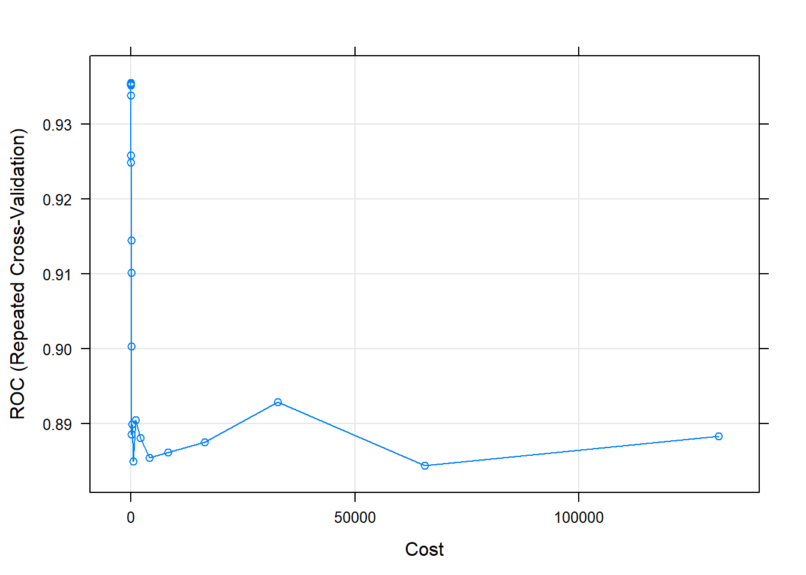
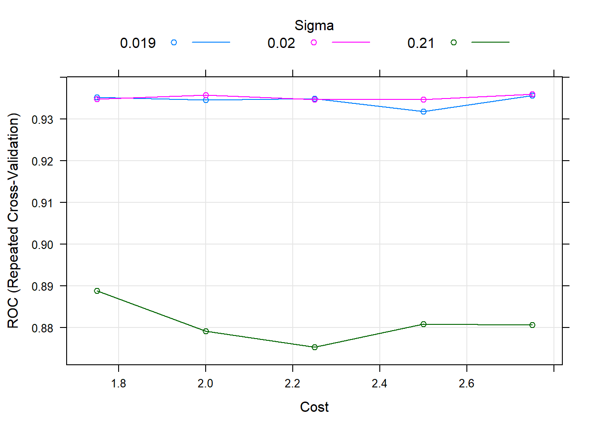
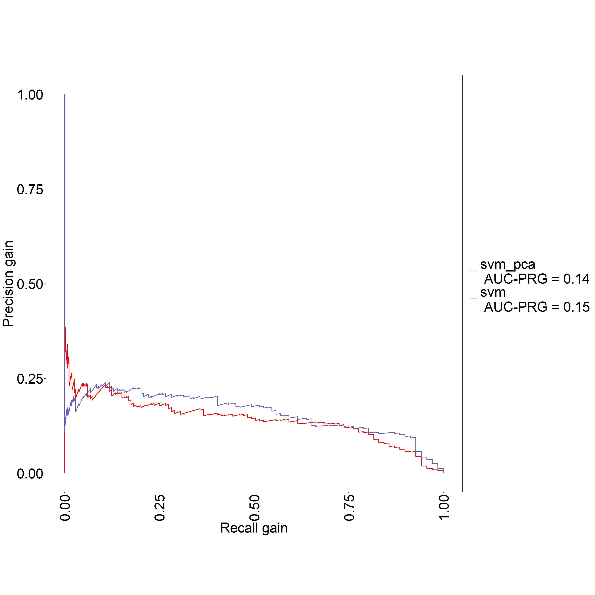

SVM
A continuación aplicaremos un modelo svm o support vector machine a nuestro grupo de datos. El algoritmo clasifica cada dato nuevo en el grupo que corresponda, según como consiga crear hiperplanos que separen de manera lineal los grupos de datos.
Cargamos las librerias y los datos que utilizaremos para el entrenamiento, con el conjunto de train, y la evaluación del modelo con el conjunto de test:
library(class)
library(dplyr)
library(caret)
library (ROCR)
library(kernlab)
library(data.table)
library(MLeval)
library(DMwR)
source("funcs.R")dataTrain_origin <- readRDS("datasetTrainModeloClasificador.rds")
dataTest_origin <- readRDS("datasetTestModeloClasificador.rds")Procedemos a despejar de los dataset (train y test) la variable objetivo original SalePrice. De la cual ya hemos creamos la variable GrupoPrecio, del tipo categorica. Separando asi por una parte un grupo de casas baratas y otro grupo de casas caras.
Nuestro modelo clasificará casas entre estos dos grupos.
dataTrain <- dataTrain_origin %>% dplyr::select(-SalePrice)
dataTest <- dataTest_origin %>% dplyr::select(-SalePrice)Para este modelo se han escogido dos grupos de caracteristicas, para poder comproba como mejora si añadimos o quitamos variables al modelo. Estos dos grupos de caracteristicas las divideramos en group1 y group2.
remove <- c('GrupoPrecio')
col_to_factor <- colnames(dataTrain) [! colnames(dataTrain) %in% remove]
dataTrain <- dataTrain %>% as_factor_all(col_to_factor)
dataTest <- dataTest %>% as_factor_all(col_to_factor)
XTrain <- dataTrain %>% dplyr::select(-GrupoPrecio)
YTrain <- dataTrain$GrupoPrecio
XTest <- dataTest %>% dplyr::select(-GrupoPrecio)
YTest <- dataTest$GrupoPrecioENTRENAMIENTO, OPTIMIZACIÓN Y EVALUACIÓN DEL MODELO
Entrenamos el modelo a la vez que buscamos los hiperparametros más optimos. Se hace un pre entreno para conseguir esos hiperparametros, una vez tengamos una aproximación inicial, volveremos a entrenar ofreciendole al modelo una serie de posibles valores optimos cercanos a la aproximación incial. Con esto se puede observar que el modelo mejora ligeramente.
#Normalización
ctrNorm <- preProcess(x = XTrain, method = c("center", "scale"))
dataTrainNorm <- predict(ctrNorm, dataTrain)
#Entrenamiento y busqueda de k más optimo
set.seed(400)
ctrl <- trainControl("repeatedcv", repeats=3,classProbs = TRUE, summaryFunction = twoClassSummary, savePredictions = TRUE, sampling = "smote")
svm <- train(GrupoPrecio ~ ., data = dataTrainNorm, method = "svmRadial", trControl = ctrl, tuneLength = 20)## Warning in train.default(x, y, weights = w, ...): The metric "Accuracy" was not
## in the result set. ROC will be used instead.(svm)## Support Vector Machines with Radial Basis Function Kernel
##
## 1837 samples
## 25 predictor
## 2 classes: 'Barato', 'Caro'
##
## No pre-processing
## Resampling: Cross-Validated (10 fold, repeated 3 times)
## Summary of sample sizes: 1653, 1654, 1653, 1653, 1654, 1653, ...
## Addtional sampling using SMOTE
##
## Resampling results across tuning parameters:
##
## C ROC Sens Spec
## 0.25 0.9355400 0.8955076 0.8000000
## 0.50 0.9351852 0.8996334 0.7880952
## 1.00 0.9353839 0.9014004 0.7928571
## 2.00 0.9338345 0.9055308 0.7690476
## 4.00 0.9257991 0.9051410 0.7285714
## 8.00 0.9248623 0.9104362 0.7000000
## 16.00 0.9145040 0.9100487 0.6404762
## 32.00 0.9101858 0.9096450 0.6309524
## 64.00 0.9002872 0.9078895 0.6190476
## 128.00 0.8885313 0.9055285 0.5666667
## 256.00 0.8899570 0.9010106 0.5785714
## 512.00 0.8849785 0.9037475 0.6023810
## 1024.00 0.8904565 0.9014039 0.6190476
## 2048.00 0.8880699 0.9031593 0.6000000
## 4096.00 0.8854863 0.9000418 0.6047619
## 8192.00 0.8862028 0.9090741 0.5619048
## 16384.00 0.8875043 0.9053428 0.6119048
## 32768.00 0.8928911 0.9014016 0.6309524
## 65536.00 0.8843824 0.9017937 0.6047619
## 131072.00 0.8883665 0.9008214 0.6380952
##
## Tuning parameter 'sigma' was held constant at a value of 0.03035357
## ROC was used to select the optimal model using the largest value.
## The final values used for the model were sigma = 0.03035357 and C = 0.25.plot(svm)
set.seed(400)
grid <- expand.grid(sigma = c(.019, .02, 0.21), C = c(1.75, 2, 2.25, 2.5, 2.75))
svm <- train(GrupoPrecio ~ ., data = dataTrainNorm, method = "svmRadial", trControl = ctrl, tuneGrid = grid)## Warning in train.default(x, y, weights = w, ...): The metric "Accuracy" was not
## in the result set. ROC will be used instead.(svm)## Support Vector Machines with Radial Basis Function Kernel
##
## 1837 samples
## 25 predictor
## 2 classes: 'Barato', 'Caro'
##
## No pre-processing
## Resampling: Cross-Validated (10 fold, repeated 3 times)
## Summary of sample sizes: 1653, 1654, 1653, 1653, 1654, 1653, ...
## Addtional sampling using SMOTE
##
## Resampling results across tuning parameters:
##
## sigma C ROC Sens Spec
## 0.019 1.75 0.9351817 0.8943346 0.8023810
## 0.019 2.00 0.9345076 0.8958951 0.8095238
## 0.019 2.25 0.9347947 0.8994338 0.8071429
## 0.019 2.50 0.9318094 0.8986483 0.7690476
## 0.019 2.75 0.9355543 0.8990463 0.8047619
## 0.020 1.75 0.9347933 0.8953092 0.8095238
## 0.020 2.00 0.9357093 0.8986611 0.8095238
## 0.020 2.25 0.9346422 0.9002274 0.7785714
## 0.020 2.50 0.9346342 0.8984546 0.7904762
## 0.020 2.75 0.9358654 0.9014016 0.7857143
## 0.210 1.75 0.8888824 0.9418656 0.3976190
## 0.210 2.00 0.8791238 0.9424574 0.3904762
## 0.210 2.25 0.8753200 0.9428530 0.4095238
## 0.210 2.50 0.8809182 0.9434320 0.4023810
## 0.210 2.75 0.8806980 0.9406811 0.4023810
##
## ROC was used to select the optimal model using the largest value.
## The final values used for the model were sigma = 0.02 and C = 2.75.plot(svm)
XTestNorm <- predict(ctrNorm, XTest)
pred <- predict(svm, newdata = XTestNorm )
cm <- confusionMatrix(pred, YTest, mode = "prec_recall" )
(cm)## Confusion Matrix and Statistics
##
## Reference
## Prediction Barato Caro
## Barato 637 12
## Caro 89 51
##
## Accuracy : 0.872
## 95% CI : (0.8466, 0.8945)
## No Information Rate : 0.9202
## P-Value [Acc > NIR] : 1
##
## Kappa : 0.4409
##
## Mcnemar's Test P-Value : 3.961e-14
##
## Precision : 0.9815
## Recall : 0.8774
## F1 : 0.9265
## Prevalence : 0.9202
## Detection Rate : 0.8074
## Detection Prevalence : 0.8226
## Balanced Accuracy : 0.8435
##
## 'Positive' Class : Barato
## tab_test <- table(pred, YTest, dnn = c("Actual", "Predichos"))
draw_confusion_matrix(tab_test, "Actual", "Predichos") ##### APLICAMOS PCA
##### APLICAMOS PCA
dataTrain_origin_PCA <- readRDS("datasetTrainModeloClasificadorPCA.rds")
dataTest_origin_PCA <- readRDS("datasetTestModeloClasificadorPCA.rds")
PCATrain <- as.data.table(cbind(dataTrain_origin_PCA$ind$coord, GrupoPrecio = dataTrain_origin %>% dplyr::select(c("GrupoPrecio"))))
PCATest <- as.data.table(cbind(dataTest_origin_PCA$ind$coord, GrupoPrecio = dataTest_origin %>% dplyr::select(c("GrupoPrecio"))))
XPCATrain <- PCATrain %>% dplyr::select(-GrupoPrecio)
YPCATrain <- PCATrain$GrupoPrecio
XPCATest <- PCATest %>% dplyr::select(-GrupoPrecio)
YPCATest <- PCATest$GrupoPrecio
set.seed(400)
ctrl <- trainControl("repeatedcv", repeats=3,classProbs = TRUE, summaryFunction = twoClassSummary, savePredictions = TRUE, sampling = "smote")
svm_pca <- train(GrupoPrecio ~ ., data = PCATrain, method = "svmRadial", trControl = ctrl, metric="ROC", tuneLength = 20)
(svm_pca)## Support Vector Machines with Radial Basis Function Kernel
##
## 1837 samples
## 50 predictor
## 2 classes: 'Barato', 'Caro'
##
## No pre-processing
## Resampling: Cross-Validated (10 fold, repeated 3 times)
## Summary of sample sizes: 1653, 1654, 1653, 1653, 1654, 1653, ...
## Addtional sampling using SMOTE
##
## Resampling results across tuning parameters:
##
## C ROC Sens Spec
## 0.25 0.9095067 0.8833310 0.7476190
## 0.50 0.9195121 0.8927521 0.7785714
## 1.00 0.9184479 0.9008029 0.7428571
## 2.00 0.9227706 0.9035457 0.7380952
## 4.00 0.9184789 0.9090579 0.7285714
## 8.00 0.9178594 0.9153301 0.6952381
## 16.00 0.9082234 0.9127903 0.6714286
## 32.00 0.9086831 0.9141768 0.6642857
## 64.00 0.9057485 0.9124040 0.6571429
## 128.00 0.8807692 0.9114074 0.6095238
## 256.00 0.8892742 0.9119933 0.5952381
## 512.00 0.8745705 0.9114027 0.5547619
## 1024.00 0.8748917 0.9076795 0.5642857
## 2048.00 0.8683785 0.9033426 0.5785714
## 4096.00 0.8642166 0.8961028 0.5785714
## 8192.00 0.8486391 0.8923761 0.5404762
## 16384.00 0.8650941 0.8968918 0.5500000
## 32768.00 0.8504844 0.8917740 0.5714286
## 65536.00 0.8610935 0.8970635 0.5976190
## 131072.00 0.8540460 0.8892168 0.5857143
##
## Tuning parameter 'sigma' was held constant at a value of 0.01691573
## ROC was used to select the optimal model using the largest value.
## The final values used for the model were sigma = 0.01691573 and C = 2.plot(svm_pca)
grid <- expand.grid(sigma = c(.01, .016, 0.2), C = c(1.75, 1.9, 2, 2.1, 2.25))
svm_pca <- train(GrupoPrecio ~ ., data = PCATrain, method = "svmRadial", trControl = ctrl, metric="ROC", tuneGrid = grid)
(svm_pca)## Support Vector Machines with Radial Basis Function Kernel
##
## 1837 samples
## 50 predictor
## 2 classes: 'Barato', 'Caro'
##
## No pre-processing
## Resampling: Cross-Validated (10 fold, repeated 3 times)
## Summary of sample sizes: 1653, 1653, 1654, 1653, 1654, 1653, ...
## Addtional sampling using SMOTE
##
## Resampling results across tuning parameters:
##
## sigma C ROC Sens Spec
## 0.010 1.75 0.9224077 0.8978710 0.7785714
## 0.010 1.90 0.9215635 0.8982620 0.7690476
## 0.010 2.00 0.9196723 0.9008214 0.7809524
## 0.010 2.10 0.9212278 0.9012101 0.7809524
## 0.010 2.25 0.9194851 0.9021940 0.7690476
## 0.016 1.75 0.9209103 0.9031674 0.7571429
## 0.016 1.90 0.9260179 0.9006103 0.7761905
## 0.016 2.00 0.9233861 0.9039575 0.7523810
## 0.016 2.10 0.9249620 0.9025803 0.7476190
## 0.016 2.25 0.9235534 0.9039552 0.7595238
## 0.200 1.75 0.8420787 0.9385149 0.4595238
## 0.200 1.90 0.8463834 0.9396995 0.4619048
## 0.200 2.00 0.8388075 0.9379336 0.4619048
## 0.200 2.10 0.8467862 0.9393050 0.4547619
## 0.200 2.25 0.8426602 0.9383293 0.4666667
##
## ROC was used to select the optimal model using the largest value.
## The final values used for the model were sigma = 0.016 and C = 1.9.plot(svm_pca)
pred_pca <- predict(svm_pca, newdata = XPCATest)
cm_pca <- confusionMatrix(pred_pca, YPCATest, mode = "prec_recall" )
(cm_pca)## Confusion Matrix and Statistics
##
## Reference
## Prediction Barato Caro
## Barato 685 32
## Caro 41 31
##
## Accuracy : 0.9075
## 95% CI : (0.8851, 0.9268)
## No Information Rate : 0.9202
## P-Value [Acc > NIR] : 0.9138
##
## Kappa : 0.4089
##
## Mcnemar's Test P-Value : 0.3491
##
## Precision : 0.9554
## Recall : 0.9435
## F1 : 0.9494
## Prevalence : 0.9202
## Detection Rate : 0.8682
## Detection Prevalence : 0.9087
## Balanced Accuracy : 0.7178
##
## 'Positive' Class : Barato
## tab_test_pca <- table(pred_pca, YPCATest, dnn = c("Actual", "Predichos"))
draw_confusion_matrix(tab_test_pca, "Actual", "Predichos")
EVALUACIÓN


res <- evalm(list(svm_pca,svm),gnames = c('svm_pca','svm'))saveRDS(svm, "svm.rds")
saveRDS(svm_pca, "svm_pca.rds")